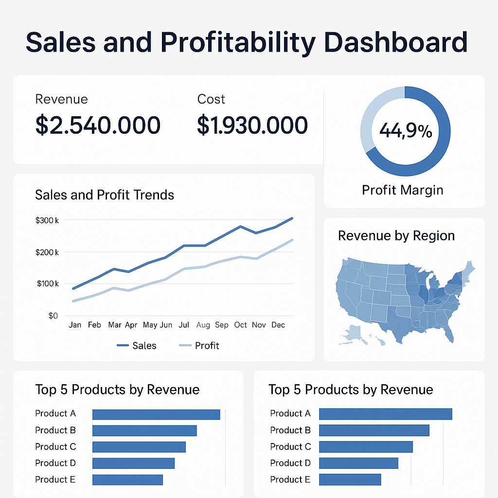

Finance Sales & Profitability (SQL • Python • Power BI)
Star schema (Sales, Products, Customers, Calendar)...
- SQL: ...
- Python: ...
- BI: ...

Dashboard caption...
Business Problem
Regional finance team needed a unified view of revenue, gross margin %, and product mix
to replace multiple Excel files and manual reporting...
Data
- Sales fact table: ~250k rows over 3 years...
- Dimensions: Products, Customers...
- Source: CSV exports...
Solution
- Modeled a star schema...
- SQL to compute base metrics...
- Used Python Pandas...
- Power BI drill-through...
Key Insights
- 15% of SKUs contributed 70% revenue...
- Two regions low margin...
- Date table reused...
Deliverables
- SQL scripts: Staging and KPI queries.
- Python notebook: EDA.
- Power BI report: Dashboard screenshots.
← Back to Home